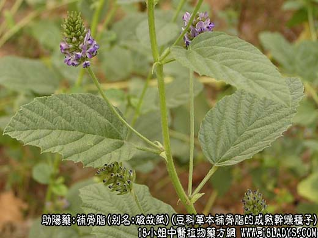
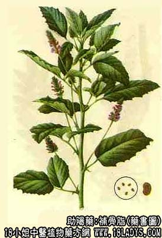

原文连接:https://www.daquan.com/post/2174.html



补骨脂为常用中药。始载《开宝本草》。
别名：怀故子、破故子、黑故子、破故纸。
来源：为豆科一年生草本植物补骨脂的成熟干燥种子。栽培，亦有野生。
产地：主产于河南、四川、安徽、陕西等地。此外江西、山西、湖北、云南等地亦有生产。
性状鉴别：补骨脂呈肾形，长3～5毫米，宽2～4毫米，厚约1.5毫米。表面黑色或黑褐色，显粗糙，有微细的网纹，一侧中部微凹入，质坚硬，不易破碎。破开后内种仁黄白色或黄绿色富油性，气微香，味微辛苦。
以粒大，成熟饱满，色黑者为佳。
主要成分：含补骨脂乙素，为天然查耳酮；又含多种香豆精类物质，主要为补骨脂内酯和异补骨脂内酯。
功效与作用：补骨脂历来认为能补肾暖脾，固精缩尿，近年来，更新发现有以下作用：
1、扩张心冠状动脉：动物实验对离体和在位心脏都有扩张冠动脉的作用；对心肌氧消耗量无明显影响。能兴奋心脏，提高心脏功作率。有效成分为补骨脂乙素。
2、外用促使皮肤色素新生。
3、抗菌：其酒精浸剂在试管内有抑制结核杆菌作用（抑菌浓度为1：50,000）。
附：补骨脂对实验性肉瘤有抑制作用，有效成分中能为香豆精类物质。
炮制：盐水炒。
性味：辛、苦、大温。
归经：入脾、肾经。
功能：温脾止泻，补肾壮阳，固精缩尿。
主治：脾虚寒泻、肾虚阳痿，遗精尿频，腰膝冷痛。
临床应用：为治疗脾肾阳虚的常用药。
1、治肾虚久泻，尤其所谓“五更泻”，即黎明前腹泻，伴有腹痛肠鸣，泻后则安，苔淡白，脉沉细，常见于肠结核、局限性肠炎、慢性结肠炎等。用补骨脂配吴茱萸、五味子等，能调整肠管功能状态（剑肠）而止泻，方如四神丸。
单纯脾虚腹泻，泻下不消化食物（所谓“完谷不化”），可用单味补骨脂微炒后研末，每服1.5g，温开水送服，有一定疗效。
2、治肾虚尿频、夜尿多，常以补骨脂配益智仁、菟丝子等，加强抗利尿作和。
3、澡肾虚腰痛、早泄、喘嗽，配核桃肉，两者有协同作用，补肾之力更强，可制丸服或入汤剂，方如故纸核桃方。
4、补骨脂虽能扩张心冠脉，但目前仍未作为主药治疗冠心病，只是在冠心病者有明显肾阳虚、夜尿多、四肢冰冷时，才在治疗方剂内酌加补骨脂6～9g协助补肾扶正。
5、治白癜风，可用补骨脂130g，加入95%酒精100毫升中，一周后取浸液擦患处，可促使患处局部色素增生，斑块缩小。
使用注意：前人经验认为补骨脂性甚窜燥，不宜轻用。现代现察也说明了，补骨脂药性较热，有些患者服后易致动火，出现口干、舌燥、咽痛等症状，阴虚火盛者更不宜服。另外，补骨脂对胃有刺激性，胃病者宜慎用，但溃疡病属虚寒型者仍可服。
用量：3～9g，不宜多服。
处方举例：四神丸（《内科摘要》）：补骨脂120g，五味子90g，肉豆蔻60g，吴茱萸30g，生姜120g，红枣50枚，制成枣肉丸，每服6～9g，温开水送服。
故纸核桃方：破故纸（补骨脂别名））30g（研末）、核桃肉60g（研烂）蜜调如饴，每晨温开水调服一匙。